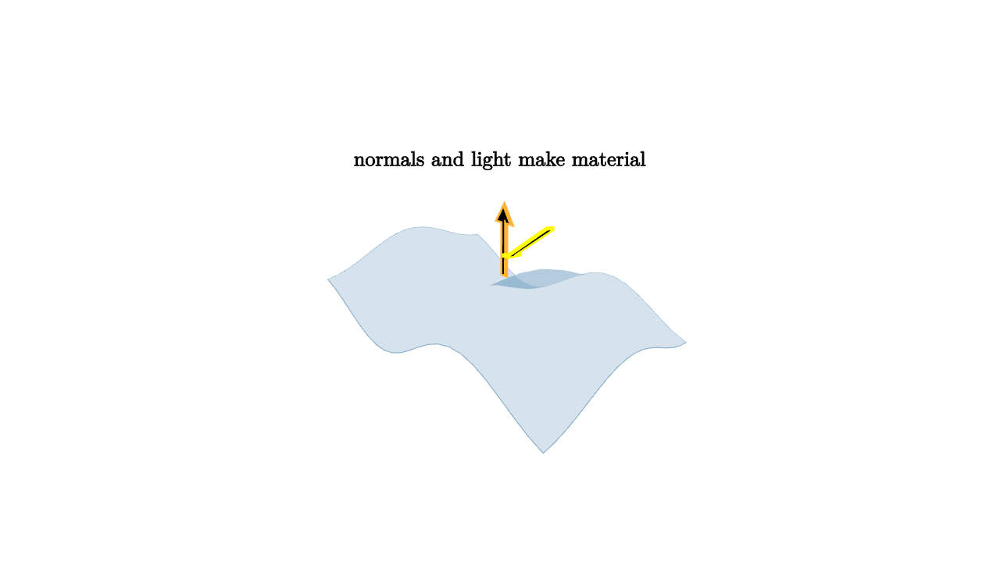

Shaders Turn Geometry Into Materials
A triangle mesh gives a renderer shape. It says where surfaces are. It does not by itself say whether those surfaces look like chalk, copper, skin, glass, plastic, or wet stone. Shaders turn geometric data into visual material.
At a pixel, a shader may receive position, normal direction, texture coordinates, vertex colors, material constants, light directions, and camera direction. It combines them into a final color. A simple diffuse lighting model is
where $\mathbf n$ is the surface normal and $\mathbf l$ points toward the light.

source
camera = Camera([3.0, -3.0, 2.0], [0, 0, 0.15], [0, 0, 1])
let soft = |col, amount| lerp(WHITE, col, amount)
let h = |x, y| 0.22 * sin(3 * x) + 0.15 * cos(3 * y)
mesh diagram = [
fill{alpha{0.18} BLUE} stroke{alpha{0.45} BLUE, 0.7} ExplicitFunc2d(|x, y| h(x, y), [-1.4, 1.4, 22], [-1.0, 1.0, 18]),
stroke{ORANGE, 3} Arrow([0.25, -0.2, 0.35], [0.25, -0.2, 0.95]),
stroke{YELLOW, 3} Arrow([1.3, -0.9, 1.15], [0.35, -0.25, 0.55]),
center{[0, 0, 1.25]} orient_to_camera{camera} Text("normals and light make material", 0.62)
]The dot product $\mathbf n\cdot\mathbf l$ measures alignment. If the surface normal points toward the light, the dot product is large and the surface is bright. If the surface turns away, the dot product shrinks toward zero. This is the same geometric operation students already know from projections and work integrals.
Real-time graphics often separates shader work into stages. A vertex shader runs on vertices. It commonly transforms positions and prepares attributes. A fragment shader runs on candidate pixels, often called fragments, after rasterization. It computes the color and sometimes writes extra information such as normals, material IDs, or depth.
source
camera = Camera([3.0, -3.0, 2.0], [0, 0, 0.15], [0, 0, 1])
let soft = |col, amount| lerp(WHITE, col, amount)
let h = |x, y| 0.22 * sin(3 * x) + 0.15 * cos(3 * y)
let shade = |pos, idx| keyframe_lerp([0 -> BLUE, 0.5 -> GREEN, 1 -> ORANGE], 0.5 + 0.5 * pos[0])
"Geometry"
mesh surface =
stroke{alpha{0.35} BLUE, 0.7}
point_map{|p| [p[0], p[1], h(p[0], p[1])]}
ColorGrid(shade, [-1.4, 1.4, 22], [-1.0, 1.0, 18])
mesh scene = [
surface,
center{[0, 0, 1.25]} orient_to_camera{camera} Text("geometry supplies positions", 0.62)
]
play Fade(0.8)
"Normals"
scene = [
surface,
stroke{ORANGE, 3} Arrow([-0.65, -0.25, 0.18], [-0.65, -0.25, 0.72]),
stroke{ORANGE, 3} Arrow([0.05, 0.2, 0.22], [0.05, 0.2, 0.78]),
stroke{ORANGE, 3} Arrow([0.72, -0.1, 0.15], [0.72, -0.1, 0.68]),
center{[0, 0, 1.25]} orient_to_camera{camera} Text("normals tell light how the surface faces", 0.62)
]
play Trans(1.0)
"Material"
camera = Camera([2.1, -1.6, 1.35], [0, 0, 0.15], [0, 0, 1])
scene = [
surface,
stroke{YELLOW, 3} Arrow([1.2, -0.8, 1.05], [0.4, -0.2, 0.55]),
center{[0, 0, 1.25]} orient_to_camera{camera} Text("shader code turns samples into color", 0.62)
]
play [CameraLerp(&camera, 1.2), Trans(0.9, [&scene])]Textures are functions sampled by shaders. A texture coordinate says which part of an image or data map belongs to a surface point. Color textures provide albedo. Normal maps perturb normals to create fine detail. Roughness maps control highlight spread. Metallic maps tell the lighting model how much the surface behaves like a conductor.
Modern material models use more than a diffuse dot product. A physically based shader often combines diffuse response, specular reflection, roughness, fresnel effects, and energy conservation. The point is still geometric: light direction, view direction, normal direction, and material parameters determine how much light reaches the camera.
Shaders also create effects beyond ordinary materials. They can animate vertices, draw procedural patterns, dissolve surfaces, render signed-distance fields, simulate water ripples, or encode data into offscreen buffers. The same pipeline that shades a triangle for display can also write information for later passes.
The teacher's throughline is that shading is local computation attached to geometry. Triangulation gives the surface pieces. Barycentric coordinates interpolate attributes. The z-buffer decides which fragment is visible. The shader decides what that visible fragment looks like. Geometry becomes an image one local decision at a time.
Vertex data becomes fragment data
The graphics pipeline carries data from vertices to fragments. A vertex shader may output a normal, a texture coordinate, a color, or a world-space position. Rasterization interpolates those outputs across the triangle. The fragment shader receives the interpolated values and computes a color.
A shader works with a sampled point on a surface, plus all the attributes the pipeline has transported there. Barycentric coordinates are the hidden courier.
Materials are functions
A material can be viewed as a function:
Here $\mathbf p$ is position, $\mathbf n$ is normal, $\mathbf v$ points toward the viewer, and $\mathbf l$ points toward a light. The parameters may come from constants, textures, procedural noise, or animation.
This function viewpoint is powerful because it separates shape from appearance. The same sphere mesh can become clay, chrome, or glass by changing the shader and material parameters. The same shader can be applied to many meshes because it expects geometric inputs rather than a specific object.
Procedural thinking
Shaders run many times, often once per visible fragment. That encourages small, local programs. A shader should avoid global reasoning and instead compute from the data at its current point. Stripes can come from $\sin$ of a coordinate. Wood grain can come from noise. A rim light can come from the dot product between normal and view direction.
This local style is also why shader bugs are visual. A normal in the wrong space creates lighting that seems glued to the camera. A texture coordinate discontinuity creates a seam. A missing gamma correction makes colors feel washed out or too dark. The image exposes the mathematical assumption.
A complete local story
For one visible fragment, the renderer can tell a compact story:
That story may be simple diffuse shading or a full physically based model. Either way, shaders are where geometry meets perception. They turn points, normals, and directions into the surface qualities the eye reads as material.